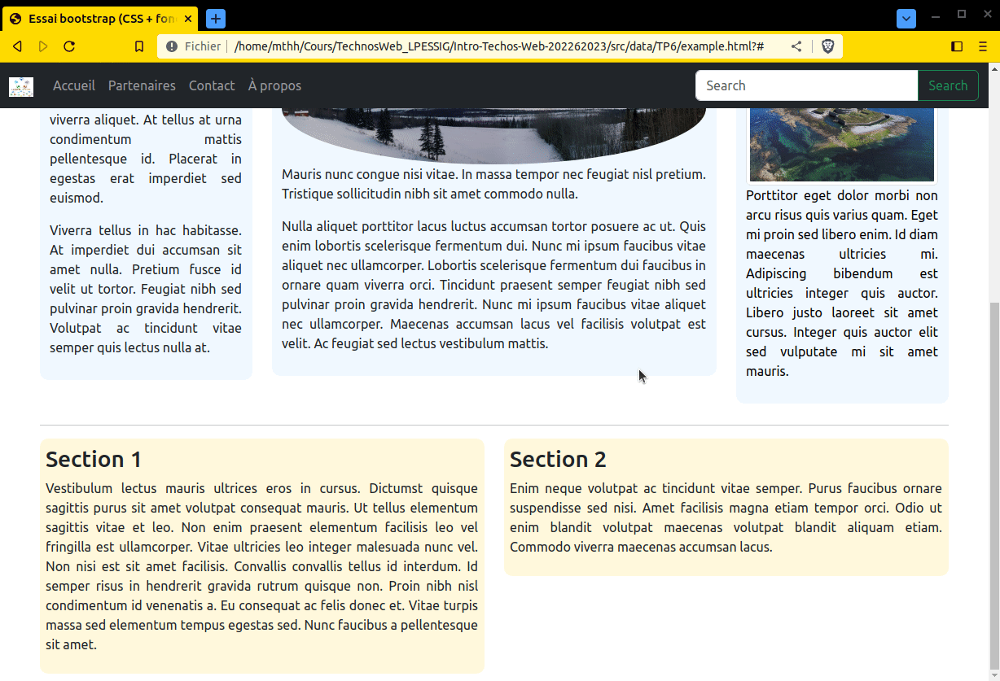
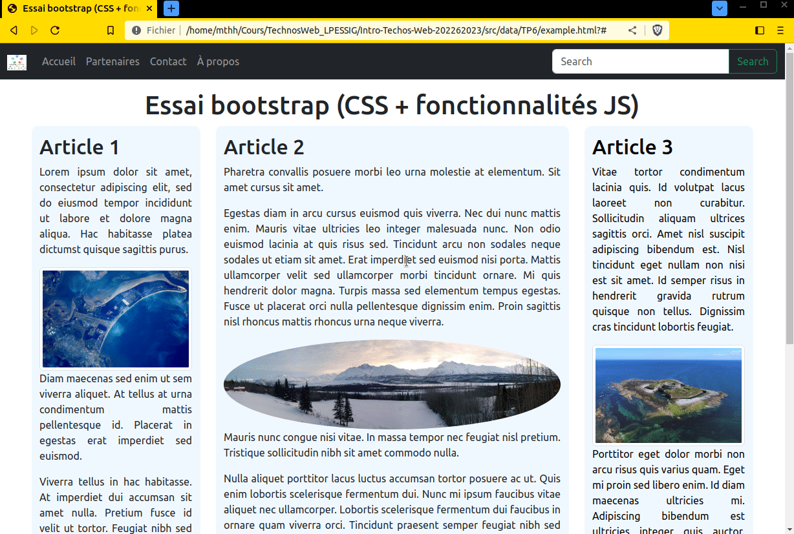
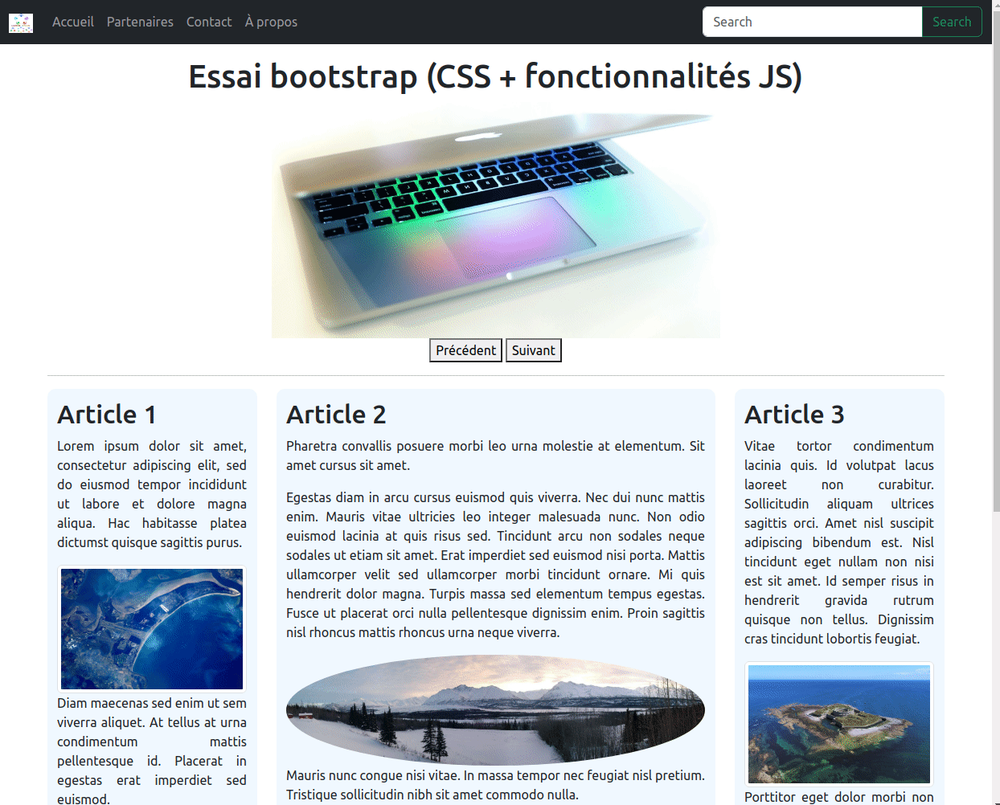
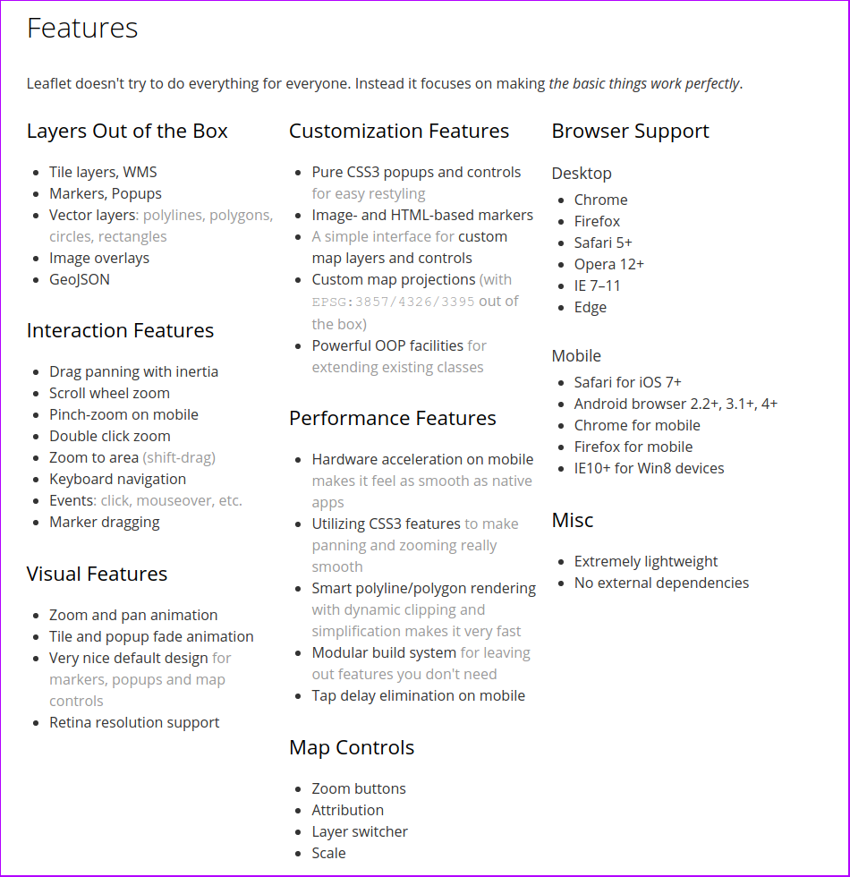

Javascript - Mise en pratique
1. Améliorer la page précédemment créée avec du JavaScript
Nous allons reprendre la page créée lors du TP4. Vous pouvez prendre le résultat que vous avez obtenus si vous êtes allé jusqu'au bout de l'exercice ou celui fourni en guise de correction (conseillé).
Nous souhaitons implémenter plusieurs fonctionnalités :
-
un message (de type
alert) lors de l'ouverture de la page disant 'Bienvenue sur ma page Web !'. -
la couleur du texte de chacun des 3 articles doit changer afin que le texte apparaisse en rouge lors du clic, lors du clic suivant, il doit revenir noir.
-
la couleur du fond de chacune des 2 sections doit changer afin que le fond apparaisse en gris lors du survol (cf. image ci-dessous).
-
lors de l'appui sur le bouton 'search', si le contenu du champ est vide, une alerte sera affichée ; s'il n'est pas vide alors le contenu sera recherché sur google.fr (cf. image ci-dessous).


2. Créer un carrousel
Nous souhaitons ensuite implémenter un "carrousel". Il s'agit d'un composant rencontré très fréquemment sur web, permettant de faire défiler (automatiquement et/ou au clic de l'utilisateur) des images.
Votre carrousel sera composé d'un espace image et de deux boutons sous cet espace permettant de changer l’image pour l'image précédente et pour l'image suivante.
Vous devrez mettre en place un tableau JavaScript contenant 5 images, et faire défiler ces 5 images au clic sur les boutons "précédent" et "suivant" (en pensant à revenir à la première image en fin de parcours de la collection).
Vous placerez ce carrousel en haut de la page HTML sur laquelle vous travaillez, sous le titre et avant les premiers articles. Vous utiliserez les images suivantes :
- https://pixnio.com/free-images/2017/08/06/2017-08-06-08-58-39-1000x526.jpg
- https://pixnio.com/free-images/2017/08/04/2017-08-04-13-34-03-1000x667.jpg
- https://pixnio.com/free-images/2017/08/04/2017-08-04-13-32-41-1000x690.jpg
- https://pixnio.com/free-images/2017/08/04/2017-08-04-13-34-27-1000x667.jpg
- https://pixnio.com/free-images/2017/08/04/2017-08-04-13-34-55-850x850.jpg

3. Pour aller plus loin... l'ajout d'une carte interactive
Nous souhaitons désormais ajouter une carte interactive créée avec la bibliothèque leaflet et y ajouter des épingles permettant de localiser nos lieux préférés.
3.1 Leaflet
Il s'agit d'une bibliothèque permettant de créer des cartes interactives. La bibliothèque est mobile-friendly par défaut et dispose de l'ensemble des fonctionnalités requise pour créer des cartes interactives personnalisées et avec vos propres données.

3.2 Ajout d'une carte et de plusieurs épingles.
Suivez le tutoriel présent sur le site de leaflet (jusqu'à la partie "Working with popups" inclus) afin d'ajouter une carte à votre page (cette carte devra être centrée sur le campus de Saint-Martin-d'Hères) puis d'ajouter 3 épingles (marker dans le tutoriel) où vous le souhaitez, chacune de ces épingle devra être permettre d'ouvrir une popup lorsqu'elle sera cliquée.
Vous constaterez que pour l'utiliser il est nécessaire d'inclure deux fichiers dans votre document HTML :
- Un fichier CSS (extension
.css) contenant des règles de styles - Un fichier JavaScript (extension
.js) contenant le code source de la bibliothèque
3.3 Choix d'un autre fond de carte
Renseignez vous (documentation, autres ressources sur le Web, ...) sur la manière de permettre à l'utilisateur de changer son fond de carte, comme sur l'exemple qui suit. Essayez d'implémenter cette fonctionnalité.